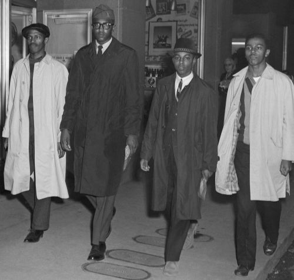

Greenboro, North Carolina is a historic college town in the peidmont region of the state, known for its revitalized downtown area, local flavors, and a wide variety of live events and performing arts.
A Brief History
Greensboro was founded in 1808, named after Major General Nathanael Greene, one of George Washington's most reputable generals during the Revolutionary War. Greensboro became known as the “Gate City” due to its location as a central hub for railway systems, bringing a massive boom of population into the city.
During industrialization, Greensboro became known for several movements, most notably, the Greensboro sit-ins, a series of non-violent protests during the Civil Rights Movement. In Febuary 1960, four college students from NC A&T sat down at a lunch counter in the F.W. Woolworth Company store in Greensboro. They were refused service because of their race despite having just bought items from a counter in the very same store. Instead of leaving, they sat down and refused to leave.

Four days later, over 1,000 people were now involved in the sit-ins, beginning a movement that spread to nearby cities and states, receiving national recoginition, and even a statement from then President Dwight D. Eisenhower. Four years later, the Civil Rights Act of 1964 outlawed segregation in public spaces.
The Colleges of Greensboro
Greensboro has several large collages, all with their own extensive history and campus culture.